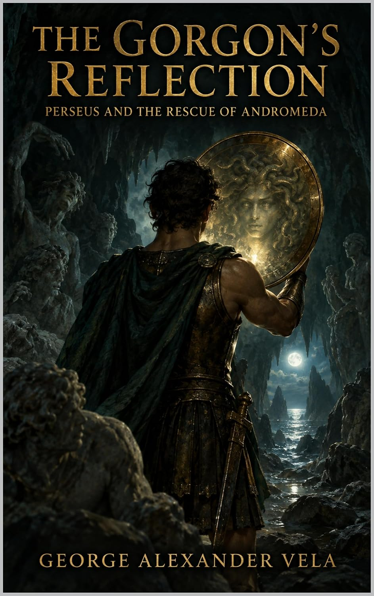

A Prophecy, a Chest, and an Island That Wasn't Supposed to Matter
Acrisius, king of Argos, went to Delphi to ask how he might finally get a son. The oracle told him something worse than no: he would never have one, but his daughter would bear a grandson, and that grandson would kill him. Most kings in this position build a wall. Acrisius built a room — a bronze chamber sunk underground, sealed against every man in Argos — and put his only child, Danae, inside it. It did not work, because in Greek myth a locked room is never actually a solution, only a delay. Zeus arrived as a shower of gold through the roof, and nine months later there was a grandson after all: Perseus.
Acrisius could not bring himself to kill his own daughter and grandchild outright — the sources are consistent on this one point, whatever else they disagree on — so he did what frightened men with resources have always done with a problem they can't face directly. He sealed them both in a wooden chest and put them out to sea, and let the water decide what he wouldn't. The chest washed up on Seriphos, a small island, where a fisherman named Dictys pulled it in and raised the boy as his own. Dictys's brother happened to be the island's king. That detail matters more than it looks like it should.
The Impossible Errand
Perseus grew up on Seriphos, and King Polydectes grew tired of waiting for him to leave. Polydectes wanted Danae, and a grown son with a temper was in the way. So he announced a wedding gift — everyone was to bring a horse — knowing perfectly well that Perseus, a fisherman's ward with nothing to his name, couldn't produce one. Cornered in front of the whole court, Perseus said he'd bring anything the king asked instead, up to and including the head of Medusa. It is exactly the kind of promise a proud, humiliated teenager makes without doing the arithmetic first. Polydectes took him up on it immediately. He had, after all, engineered the entire moment for precisely this outcome.
Medusa was one of three Gorgon sisters, and the only mortal one — which meant she was the only one who could actually be killed, and the only reason anyone would bother trying. A direct glance at her face turned a man to stone. She lived at the edge of the known world, guarded by nothing except that fact. Perseus had no ship, no army, no weapon suited to the job, and no idea which direction to even start walking. What he had was a promise made in public that he couldn't take back without being called a coward for the rest of his life on a small island with nowhere to hide from the judgment.

The whole quest, start to finish, is my new novel The Gorgon's Reflection. Get it on Kindle for $0.99 →A Mirror Instead of a Blade
What makes the Perseus myth strange, rather than just another monster-killing, is how little of it is actually solved with a sword. Athena and Hermes — his half-siblings by Zeus, and evidently invested in the outcome — pointed him first to the Graeae, three sisters who share a single eye and a single tooth between them and take turns passing both around. Perseus stole the eye mid-handoff and refused to return it until they told him where to find the nymphs who kept the tools he actually needed: winged sandals, a cap that grants invisibility, and a kibisis, a bag deep enough to carry something too dangerous to look at directly.
The last piece came from Athena herself: a shield polished to a mirror. Medusa's gaze turned flesh to stone whether you meant to look or not — so Perseus never looked at her at all. He tracked her only in reflection, approached backward, and took the killing stroke guided by an image rather than the thing itself. It is, as far as ancient monster-slaying goes, an almost absurdly indirect solution — beat an unbeatable weapon by refusing to engage with it on its own terms. The severed head went into the bag. From her neck sprang Pegasus and the giant Chrysaor, fully formed, Poseidon's children finally born the instant their mother died. Perseus flew home with a weapon that worked exactly as well dead as she had alive, because he still could not look at it either.
A Chained Princess and a Wedding That Became a War
He didn't fly straight back to Seriphos. Over Ethiopia, he found Andromeda chained to a sea cliff, offered up by her own parents to a monster because her mother had made the mistake of claiming to be more beautiful than the sea nymphs, and the sea god's price for the insult was the daughter. Perseus did not need the shield for this part. He struck a bargain first — her hand, if he saved her life — and then simply killed the thing, sources differ on exactly how much Medusa's head had to do with it. What the sources agree on is what happened next: a wedding feast crashed by Andromeda's already-betrothed cousin and his armed men, a hall full of guests who hadn't signed up for a battle, and, when the fighting turned against him, one last use for the thing in the bag. The head still worked. It always would.
He came home to Seriphos to find his mother had spent the whole expedition sheltering from Polydectes at an altar, and that the king had never for one second expected the errand to be survivable. The impossible task, once completed, does not become a triumphant homecoming so much as a debt finally called in — and the king who set it, and never once believed he'd have to pay out, discovers that the head still works on people who are still smiling when they see it coming.
What the Sources Actually Disagree On
Every book in this series closes with an Author's Note, and this one carries its share of genuine fault lines. Ovid gives Medusa a human backstory — assaulted by Poseidon in Athena's own temple, then punished by the goddess rather than the god who committed the act — while Apollodorus's own hedged alternative skips the assault entirely and makes it a plain contest of vanity. The novel uses Ovid's version, for the weight it lends what follows, and keeps it to a single paragraph of report before the beheading — the horror carried by what's known to have happened, never staged. The two ancient endings disagree too: Apollodorus and Pausanias have Acrisius die years later by a stray discus, the prophecy paid in full at last; Ovid alone gives Perseus restoring his grandfather to the throne instead, no death, no debt collected. The book follows the discus — two sources against one, and the ending the whole story seems to have been walking toward since its first page.
That's the standing rule for this whole series: when a myth has more than one version, the book says so, names the source, and tells you which choice was mine to make. Nothing here is invented to smooth the story over — only disclosed where the tradition itself never agreed.
The Gorgon's Reflection: Perseus and the Rescue of Andromeda
Perseus from the wooden chest to the stars — the mirror-shield, the impossible errand, and the princess on the rock — retold direct from Apollodorus, Ovid, and Pindar, with an Author's Note naming every variant tradition. Out now on Kindle, $0.99, free in Kindle Unlimited.
Also on the blog: